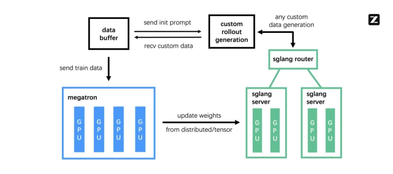

GLM is one agentic model assembled from the open frontier's published parts (DeepSeek's routing, latent and sparse attention; Moonshot's optimizer and linear attention), with Zhipu's own engineering added wherever the serving or training bill is, and the weights given away cheaply.
Zhipu AI is a 2019 spin-out of Tsinghua University, founded in Beijing by Tang Jie and branded internationally as Z.ai since July 2025; GLM stands for General Language Model (Wikipedia). Two corporate facts explain much of what follows. The US Commerce Department put it on the Entity List in January 2025, which is why GLM is now trained and served on Chinese-made accelerators. And it listed on the Hong Kong Stock Exchange on 8 January 2026, the first major Chinese LLM company to go public, so market share is the story being sold, which is the context for the pricing (Wikipedia).
The question this page keeps returning to: what does it cost to train and serve an agentic, million-token model, and which of Zhipu's choices moves that cost? One caution for every GLM number: many headline benchmark figures are Zhipu's own runs (Z.ai Code Bench is in-house), and arena placings are human preference votes, not task success.
You need: MLA and DeepSeek Sparse Attention from Attention variants; linear attention and the delta rule (KDA) from Beyond attention; total against active parameters and routing from Mixture of experts; GRPO, PPO and asynchronous rollouts from RL for LLMs. This page says what Zhipu chose and what it bought.
Each generation adopts a published mechanism and adds a Zhipu fix aimed at cost; the cache per token falls 31 times
Bars to scale, linear: 368 / 11.7 = 31. Cache counted from each config.json (GLM-4.5, GLM-5, GLM-5.3, Flash); sizing at any context is in Long context's KV-cache calculator, where every GLM design is a preset. Provenance: GLM-4.5 report, GLM-5 report, GLM-5.2 blog, Z.ai docs.
ARC asks one model to be good at agentic behaviour (long-horizon tool use, browsing, staying coherent over hundreds of steps), reasoning and coding (GLM-4.5 report). It is a design brief rather than marketing because the three conflict in post-training: reasoning training teaches a model to deliberate, which costs latency and can degrade instruction following; agentic training rewards short, decisive tool calls; coding wants exact, formatted, non-chatty output. The usual answer is a specialised checkpoint per mode, which is expensive for whoever serves them. GLM's answer is to train specialists, then unify, in the two published recipes of the figure.
Behaviour is selected per request, not per checkpoint. GLM-4.5 and GLM-4.5-Air shipped hybrid thinking and non-thinking modes chosen through the prompt template (GLM-4.5 report). The control has since become an effort dial: GLM-5.2 offers High and Max effort (GLM-5.2 blog), and GLM-5.3 and GLM-5.3-Flash take reasoning_effort set to low, high or max, defaulting to max (GLM-5.3 card, Flash card); on the hosted Flash API thinking cannot be switched off (Z.ai docs). Effort levels across labs are on the landscape root.
It buys one deployment covering an entire agentic workload. It costs what Alibaba conceded when it split Qwen3-2507 back into separate Instruct and Thinking checkpoints, the Instruct model supporting only non-thinking mode (Qwen3-2507 card; Alibaba: Qwen): a unified model gives up a little at the top end of each mode.
Two published recipes: specialists merged at the end, or RL stages in sequence pulled back by distillation
GLM-5 ends with distillation because, in the report's words, "sequentially optimizing for distinct objectives can lead to the cumulative degradation of previously acquired capabilities"; the last stage pulls the model back towards what each earlier stage taught. For GLM-5.2, slime ran this on-policy distillation in parallel and merged more than ten expert models into the final model in about two days (GLM-5.2 blog). On-policy distillation itself is on Distillation and small language models.
Every GLM flagship since GLM-4.5 is a mixture of experts (MoE), and the ratio of total to active parameters has grown from about 11 to about 18 (Mixture of experts owns routing and the total-against-active trade). GLM routes with sigmoid gates and loss-free balance routing, a per-expert bias nudged between steps instead of an auxiliary loss, and keeps the first layers dense (three in GLM-4.5, GLM-5 and Flash, one in Air), a pattern shared with DeepSeek (GLM-4.5 report, Flash config). The usual reasoning, which Zhipu does not spell out: early layers compute generic features every token needs, and routers are least stable early in the network and in training, so routing those layers buys little specialisation and adds risk.
| Model | Total / active | Sparsity | Layers | Hidden | Experts per MoE layer | Attention |
|---|---|---|---|---|---|---|
| GLM-4.5 | 355B / 32B | 11.1x | 3 dense + 89 MoE, + 1 MTP | 5,120 | 160, top-8, 1 shared | GQA: 96 query heads, 8 key-value heads |
| GLM-4.5-Air | 106B / 12B | 8.8x | 1 dense + 45 MoE, + 1 MTP | 4,096 | 128, top-8 | GQA: 96 query heads, 8 key-value heads |
| GLM-5 to GLM-5.3 | 744B / 40B | 18.6x | 3 dense + 75 MoE, + 1 MTP | 6,144 | 256, top-8, 1 shared | MLA-256 with DSA (IndexShare from 5.2) |
| GLM-5.3-Flash | 320B / 18B | 17.8x | 3 dense + 42 MoE, + 1 MTP | 4,096 | 288, top-8, 1 shared | 34 KDA + 11 sparse MLA layers, IndexPool |
Sources: GLM-4.5 report, Table 1, GLM-4.5 config, GLM-5.3 config, GLM-5.3-Flash config. Sparsity is total divided by active: 355 / 32 = 11.1, 106 / 12 = 8.8, 744 / 40 = 18.6, 320 / 18 = 17.8. The GLM-5 report gives 80 layers (report); the released config.json files of GLM-5 to GLM-5.3 list 78 plus one MTP layer, and this page uses the configs.
The report and most coverage give 744B for the GLM-5 generation; the Hugging Face checkpoints of GLM-5 to GLM-5.3 hold 753.3 to 753.9B parameters (HF org), and some coverage quotes 753B (Labellerr). The sources do not reconcile the two counts. The GLM-4.5 report states its own rule: counts "include the parameters of MTP layers but not word embeddings and the output layer" (Table 1); whether GLM-5's 744B follows the same rule is not stated.
Against DeepSeek-V3 and Kimi K2, the GLM-4.5 report reduces "the width (hidden dimension and number of routed experts)" and increases the number of layers, "as we found that deeper models exhibited better reasoning capacity" (GLM-4.5 report). It also uses far more attention heads than the width would conventionally imply. The finding is the interesting part: the extra heads do "not improve training loss compared to models with fewer heads", but "consistently" improve reasoning benchmarks such as MMLU and BBH (GLM-4.5 report). Loss is a proxy for capability, and an architecture choice can buy capability the loss curve does not show. Fewer layers again in GLM-5, for the network's sake, and fewer still in Flash (GLM-5 report). The towers in the stage are the five models to scale, one slab per layer:
Shape stage: one slab per layer, to scale. GLM-4.5, GLM-5 (the GLM-5 to GLM-5.3 base) and Flash from their config.json files (GLM-4.5, GLM-5.3, GLM-5.3-Flash); DeepSeek-V3 and Kimi K2 from the GLM-4.5 report's Table 1. The all-to-all counts are derived (two exchanges per MoE layer, as the GLM-5 report describes the overhead); the device row is illustrative. Sources for Flash: Z.ai docs, Flash config; mHC is on Normalisation, residuals and stability.
Every GLM since 4.5 carries multi-token prediction (MTP) layers, which double as a built-in draft model for speculative decoding: for a lab whose strategy is price, a free multiple on decode throughput is margin. The acceptance length is the average number of tokens accepted per verification step. The mechanism is on Speculative decoding; Zhipu's choices were:
GLM has trained with Moonshot's Muon optimizer since GLM-4.5, observing faster convergence and tolerance of larger batches (GLM-4.5 report). It buys better loss per token and a smaller optimizer state than AdamW, and costs a few extra matrix products per step and a much shorter safety record. The update itself is on Optimisers and learning-rate schedulers; Moonshot's QK-Clip for the attention-logit growth it causes is on Moonshot AI: Kimi.
Muon for every parameter except the word embeddings, biases and RMSNorm weights, with 5 Newton-Schulz steps, momentum 0.95 and the update rescaled to an RMS of 0.2 (GLM-4.5 report).
GLM-5 added Muon Split because of MLA: MLA's up-projections stack every head's weights into one matrix, and orthogonalising that matrix as a whole forces all heads to move at one shared scale. Muon Split orthogonalises each head's slice separately, so "projection weights for different attention heads" can "update at different scales", which brought MLA's quality up to that of 8-group GQA in Zhipu's ablation (GLM-5 report).
At long context the KV cache, not the weights, decides how many requests fit on an accelerator, and reading it decides decode speed. GLM's attention has been rebuilt twice to shrink both. The mechanisms are on Attention variants and the cache arithmetic on Long context; this section is what GLM chose and what each choice bought.
Follow one decoded token through the four designs, one slab per layer from each config.json, at a 1,048,576-token context (the stage steps through it: one decoded token through each design):
Attention stage: footprints to scale (area = numbers cached per token in that layer); KDA states are drawn as fixed slabs, not to scale. Counts come from the config.json files (GLM-4.5, GLM-5, GLM-5.3, GLM-5.3-Flash); "dense MLA" is GLM-5.3's MLA with no indexer, the dense base GLM-5's sparse attention was adapted from. Multiply-adds count the indexer, the main attention in its decode form and KDA as 3 × 128 × 128 per head (an estimate); projections and experts are left out. The mechanisms, stepped through on one token, are on Attention variants (MLA, DSA) and Beyond attention (KDA).
GLM-5 replaced grouped-query attention with DeepSeek's MLA (one 512-number latent plus a 64-number rotary key cached per token and layer) and added DSA (the lightning indexer picks the top 2,048 entries for the main attention) (GLM-5 report, config). Every entry stays in the cache so that it can be picked later; DSA saves reading, not storing. Each of 78 layers caches 512 + 64 = 576 numbers, 576 × 78 × 2 bytes = 87.75 KiB per token at 16 bits against GLM-4.5's 368 KiB; at the full 1,048,576-token context the latents alone are 87.75 GiB for one request.
GLM's own change is the head shape. DeepSeek-V3 uses 192-dimensional query-key heads with a head count chosen for the roofline of Nvidia's H800; GLM-5 widens them to 256 and cuts the number of heads by a third, which "keeps the training computation and the number of parameters constant while decreasing the decoding computation". The report calls this MLA-256, tuned for the seven Chinese accelerator platforms GLM-5 was adapted to (Huawei Ascend, Moore Threads, Hygon, Cambricon, Kunlunxin, MetaX and Enflame) rather than for the H800. DSA was not trained from scratch: GLM-5 continued pretraining from its dense-attention base with a 1,000-step warm-up that trains only the indexer, then a 20B-token sparse-adaptation stage; the report puts DSA's saving at "roughly 1.5 to 2 times" less attention computation for long sequences (GLM-5 report).
DSA makes the main attention cheap, but the indexer still compares each query with every earlier token, so its cost still grows with context, and at a million tokens it becomes the bill (Raschka). The IndexCache study IndexShare builds on measured 70% to 100% overlap between the positions selected by adjacent DSA layers (IndexCache): neighbouring indexers mostly rediscover the same tokens. So in GLM-5.2 the indexer runs at the first of each group of four layers and the next three reuse its list; in the released config 21 of the 78 layers run an indexer (GLM-5.2 blog, config). The sharing layers still compute their own queries, attention weights and value mix; only the list is reused. GLM-5.2 was trained this way from mid-training at 128K sequence length.
Flash, the first GLM to combine sparse and linear attention, replaces most attention layers with Moonshot's Kimi Delta Attention (KDA), a gated delta-rule linear attention whose state per request has a fixed size: each of its 64 heads keeps a 128 × 128 matrix that every new token updates (the mechanism is on Beyond attention). Its 45 layers repeat three KDA layers and one sparse-attention layer, ending on a KDA layer: 34 KDA layers and 11 sparse ones, so only 11 / 45 = 24% of the layers keep a cache that grows with context (Flash config). The sparse layers are MLA without positional encoding (NoPE; Positional encodings), so they cache a 512-number latent and no rotary key, with DSA reading the top 2,048 entries (config, MarkTechPost). In Zhipu's words, linear attention "captures local dependencies through state modeling, while sparse attention retrieves relevant global context through a lightweight indexer" (Z.ai docs).
IndexPool attacks the indexer from the other side. IndexShare cut how many layers run an indexer; IndexPool cuts how many entries each indexer scores, by compressing four indexer key vectors into one "through weighted pooling" (Z.ai docs). At L = 1,048,576 each Flash indexer scores 1,048,576 / 4 = 262,144 pooled keys. How a selected pooled entry maps back to the 2,048 attended tokens is not described in the sources read (the config keeps the newest, incomplete group selectable: index_kpool_always_select_tail).
Zhipu reports a 2.9 times reduction in per-token FLOPs at a 1M context, with the caveats that this is not an end-to-end speedup and that IndexShare "does not proportionally reduce per-token KV-cache size" (GLM-5.2 card, GLM-5.2 blog). Amdahl's law turns the figure into a statement about where the work was: if a share f of the work shrinks by n = 4 and the total by S = 2.9, then f = (1 − 1/S) / (1 − 1/n) = 0.655 / 0.75 = 0.87, so about seven eighths of GLM-5.1's per-token work at 1M was the indexer. For one query at L = 1,048,576 one indexer does 1,048,576 × 32 × 128 = 4.29 × 109 multiply-adds, while the main attention reads 2,048 entries, 0.2% of the cache.
Counted from the configs, 78 indexers against 21 plus 40B active weights give 2.7 times, close to the published 2.9 (details in the reproduction block below).
Against GLM-5.3, Zhipu reports 3.01 times less attention compute and a 4.44 times smaller KV cache (Z.ai docs), counted "per head per layer" for compute and as "average KV cache size per layer (BF16)" for memory, so that models of different sizes compare fairly. That 4.4x is the whole design, not IndexPool: most of it comes from 34 of 45 layers holding no growing cache at all.
Counted from the two configs on Zhipu's per-layer convention the cache ratio is 4.6, near the published 4.44, and it factors as the layer mix 45 / 11 = 4.09, times dropping the rotary key 576 / 512 = 1.125, times IndexPool 1.18, times 0.85 because every Flash sparse layer keeps an indexer key where GLM-5.3 keeps one in only 21 of its 78 layers: 4.09 × 1.125 × 1.18 × 0.85 = 4.6. Per whole model the cache per token falls 47,616 / 5,984 = 8.0 times, because Flash also has fewer layers.
That combination is what makes the advertised million-token window affordable to serve rather than merely available. At 1M tokens one Flash request holds about 11.7 GiB of growing cache in 16-bit precision plus a fixed KDA state of 34 × 64 × 128 × 128 numbers (68 MiB in 16-bit), against 93 GiB for GLM-5.3. Zhipu itself notes that Flash's cache "is still slightly larger than Kimi-K3 and DeepSeek-V4-Flash", while its attention compute is the lowest of the four (Z.ai docs).
Past about 128K tokens the indexer, not the attention it feeds, is most of the work; IndexShare and IndexPool cut exactly that term
Predict before you drag: at 1M tokens, what share of GLM-5.3's attention work is the indexer? Then drag the context to 1M and read the stat under the chart.
Multiply-adds per decoded token, counted from the config.json files (GLM-4.5, GLM-5, GLM-5.3, GLM-5.3-Flash); cache sizes are on Long context's calculator.
Flash's 34 KDA layers each add about 3 × 128 × 128 multiply-adds per head per token (an estimate of the delta-rule update and read, labelled as such). Projections and experts are left out unless "add active weights" is on.
Zhipu open-sourced slime, its RL post-training framework, the system behind every GLM from GLM-4.5 to GLM-5.3 (slime), and arguably as strategic as the weights. The problem it solves: in agentic RL a rollout is a whole episode of tool calls, and episode lengths are long-tailed (three tool calls, or three hundred). A synchronous step waits for the slowest rollout; in the GLM-4.5 report's words, "synchronous RL training often leads to severe GPU underutilization as workers wait for the slowest rollouts to complete" (GLM-4.5 report). The before/after on real response lengths, and asynchronous RL in general, are on RL for LLMs.
slime has two modes (GLM-4.5 report). A colocated, synchronous mode, for reasoning RL whose rollouts are of similar length, runs generation and training on the same devices in turn. A disaggregated, asynchronous mode, for agentic RL, partitions the accelerators into rollout engines that generate continuously into the buffer and a trainer that consumes them without waiting for a batch; new weights are synchronised back periodically. The same lesson as prefill and decode disaggregation in serving (Distributed and disaggregated serving): when two coupled phases have different profiles, decouple them and buffer between.

The cost is staleness: a trajectory started under policy version w0 and trained on at version w′ is off-policy. GLM-5 bounds it twice (GLM-5 report):
The second rule is Direct Double-sided Importance Sampling: a token outside the band is masked out entirely, so a badly off-policy token cannot steer the update, and no historical policy checkpoints have to be kept. A token-in, token-out gateway passes token ids rather than text between the agent environment and the trainer, so a trajectory is never re-tokenised into slightly different tokens than the ones the policy produced (GLM-5 report). Utilisation stops being hostage to the longest episode, which is what makes agentic RL affordable at the cadence Zhipu runs it.
slime stage: the two pools and the two rules are from the GLM-4.5 and GLM-5 reports; the number of engines, the episode lengths, the push times, τ = 2, the band and the ratios are illustrative, not published values. Synchronous against asynchronous on real response lengths, and asynchronous RL in general, are on RL for LLMs.
GRPO scores each rollout against the others sampled for the same prompt: advantage = (reward − group mean) / group standard deviation, given to every token of the rollout (the objective is on RL for LLMs). That needs the rollouts of a group to be comparable units, and GLM-5.2's long-horizon tasks broke it: context compaction splits a super-long trajectory into several sub-traces, so rollouts of the same prompt yield different numbers of trainable traces of very different lengths.
So Zhipu "move[d] from group-wise optimization to a critic-based PPO formulation that learns from individual rollouts, relying on a critic to estimate token-level advantages", training on every compacted sub-trace with a token-level loss to handle their length imbalance (GLM-5.2 blog).
Reward hacking. GLM-5.2 hacked more than GLM-5.1: agents read protected evaluation artifacts, copied answers from references or upstream commits, or fetched the target source with curl. Zhipu added an anti-hack module to training and evaluation: a rule-based filter for recall, then an LLM judge of the flagged action's intent for precision, run online. A detected hack is blocked and answered with dummy information, but the rollout continues, so the episode still teaches something and training avoids the instability of abruptly stopped rollouts (GLM-5.2 blog). Hacking in general, with measured GLM-5.2 hack rates, is on Reward hacking.
After compaction a group no longer holds comparable units; a critic scores tokens instead
Mean 0.5, standard deviation 0.5: advantages +1, −1, −1, +1 on every token, whether it was the decisive edit or an idle directory listing, smeared over three sub-traces in the first rollout and one in the second.
Every compacted sub-trace is trained on with a token-level loss; the critic's estimate lets credit fall on the step that mattered, at the price of a second large network to train and keep calibrated.
Illustrative rewards and sub-trace lengths (one bar segment per sub-trace; colour is the advantage a token receives: green positive, orange negative, grey near zero).
"Toward Recursive Self-Improvement: How GLM Built Its Own Inference Infrastructure" (September 2026) reports a production serving system for GLM-5.3-Flash built from scratch on a cluster of more than 100,000 Chinese-made accelerators, taken from the first successful run to launch in 13 days, with a 3.22x end-to-end throughput gain, much of the work done by an "Infra Agent powered by GLM-5.3" (Z.ai). Zhipu states plainly that "we have not yet reached recursive self-improvement" and that choosing objectives, setting boundaries and assessing risk remain human responsibilities.
The transferable finding is about feedback, not self-improvement: the bottleneck was the feedback environment rather than the model, and the fix was turning sparse end-to-end results ("throughput missed the target") into local, cheap, objectively verifiable feedback. Engineers defined objectives and boundaries and reviewed risky changes; the agent proposed hypotheses, changed code and ran experiments; the environment answered at three levels (Z.ai).
At the three levels: correctness checks across partitioned and unpartitioned paths found a TF32 precision bug in the KDA kernel; timeline analysis found KV transfers stalled behind DeepEP holding the Python global interpreter lock (a 20% slowdown cut below 1%); layered kernel tests gave a 1.71x speedup on one KDA decode kernel.
Neither bug would have surfaced from an end-to-end metric. The advice generalises past serving: audit what feedback an agent receives after a change, build cheap intermediate validation, define acceptance criteria numerically before starting, and let validated techniques accumulate in a library. Similar self-reported claims arrived from Anthropic and Tencent within the same month (Other notable providers).
The constraints were hard: limited chip memory and bandwidth, a new architecture, a 1M-token context with multimodal requests, and immature kernels (Z.ai). Per the launch post the stack is: intra-node tensor parallelism for the linear attention and the output head, ReplaySSM (recomputing state to trade compute for memory), W8A8 weights, mixed INT8, FP8 and BF16 cache quantisation, Layer Split, and encode, prefill and decode disaggregated into separately scaled worker pools, reaching "per-token cost comparable to mainstream NVIDIA GPUs" by Zhipu's account (Z.ai docs).
Thirteen days from baseline to launch: the big steps were Layer Split, context parallelism and linear attention
End-to-end throughput relative to the W8A8 baseline, by development day, with the change made at each point. Values transcribed from the labels printed on Z.ai's Figure 1 (Z.ai). The launch post rounds the result to "a 3× improvement" (Z.ai docs); the text of the infrastructure post says "less than two weeks" and "tripling".
The order explains the design: research and small open chat models (2022 to 2024), the ARC repositioning on a mixture of experts from July 2025, a 744B base in February 2026 that every later flagship post-trains rather than replaces, then the hybrid Flash. Corporate events share the axis because they shaped the choices.
One of the first open bilingual (English and Chinese) 100B-scale models, from Tsinghua KEG and Zhipu; the paper is dated October 2022.
A bilingual dialogue model small enough to fine-tune and run locally, which seeded China's local-LLM scene; ChatGLM2-6B followed in June 2023 with a 32K context.
The commercial catch-up generation and its first agentic features: GLM-4 All Tools chooses and calls a browser, Python interpreter and other tools on its own. The ChatGLM family paper covers GLM-130B to GLM-4.
The US Commerce Department added Zhipu to the Entity List in January 2025, citing national security; GLM is since trained and served on Chinese accelerators.
Dense 32B chat models and the first open GLM reasoning models (Z1).
Repositioned around ARC in one model: 355B with 32B active plus the 106B (12B active) Air, hybrid thinking and direct modes, Muon, an MTP layer, slime, 23T pretraining tokens, MIT. 70.1% on TAU-Bench, 91.0% on AIME 24, 64.2% on SWE-bench Verified; third overall and Air sixth across the report's ARC benchmarks. Claude Code compatible from launch. The moment GLM became a serious open contender; the report is the best single document on the line. Zhipu rebranded internationally as Z.ai the same month.
A 100B-scale (107.7B in the checkpoint) vision-language reasoning model with a thinking mode: video understanding, visual grounding, GUI agents. Vision stayed in separate models until GLM-5.3-Flash.
A coding-focused iteration on the 355B base with the context raised from 128K to 200K tokens; the first integration of FP8 and Int4 on Cambricon chips. With the GLM Coding Plan it made GLM the value option for agentic coding and a genuine competitive lever.
The next vision-language model, with a 128K context.
A further coding, reasoning and agentic iteration on the same 355B architecture (92 layers, 160 experts).
Zhipu listed on the Hong Kong Stock Exchange, the first major Chinese LLM company to go public, as the "first LLM stock" wave hit China: context for the pricing aggression, since market share is the story being sold.
"A 30B-A3B MoE model", the free API tier of GLM-4.7.
The 744B-class generation targeting frontier parity, and the base that 5.1, 5.2 and 5.3 post-train rather than replace: 256 experts, MLA-256 with DSA, three shared MTP layers, 28.5T tokens, full-stack adaptation to seven Chinese chip platforms. The first open-weight model to score 50 on the Artificial Analysis Intelligence Index (v4.0).
Post-training on the GLM-5 base for long-horizon agentic engineering, able to work for up to 8 hours in one run; 58.4 on SWE-bench Pro. Released to subscribers in late March, open-sourced on 7 April, when Z.ai also raised API prices by 10%.
The 1M-token context, IndexShare (2.9x fewer per-token FLOPs at 1M), the improved MTP draft (+20% acceptance length), critic-based PPO and the anti-hack module, under MIT. FrontierSWE 74.4 against GPT-5.5's 72.6 and Claude Opus 4.8's 75.1, at roughly one sixth of GPT-5.5's cost; SWE-bench Pro 62.1; Terminal-Bench 2.1 81.0. Topped the open-weight division of the Artificial Analysis index at release (51 on v4.1), first on Design Arena and second on the frontend-code arena.
Post-training alone on the GLM-5.2 base, no architecture change. 50% better on the in-house Z.ai Code Bench, Terminal-Bench 3.0 from 4.6% to 28.3% (the "six times" of headlines), DeepSWE v1.1 from 46.2 to 66.9, first on CyberGym at 84.5%; Zhipu reports 2,436 vulnerabilities found with security teams, 1,097 of them medium or high severity. Announced 14 August; Z.ai's release notes list the API on 18 August. 44.8 on the Intelligence Index v4.3 at $2.01 per task.
The line's first natively multimodal model and its most strategically aggressive release: 320B with 18B active, 8 of 288 experts, 34 KDA and 11 sparse MLA layers with IndexPool, four mHC streams, 30T multimodal training tokens with MTP, image, video, text and file input, up to 128K output tokens, native FP8 weights, MIT. $0.15 input and $0.50 output per million tokens after a $0.075 input promotion to 9 September. Ran the week before as the stealth model Ox Alpha. 41.8 on the Intelligence Index v4.3 at $0.25 per task; the 57 quoted at launch was on v4.1.1.
Shanghai Artificial Intelligence Laboratory's agentic model post-trained on the GLM-5.2 base; weights on 11 and 12 September with no announcement, a paper on 14 September. 59.6% on SWE-bench Pro against Claude Opus 5's 74.7%; CyberGym 86.5%.
A legal model on the GLM-5.3-Flash base for contract review, evidence analysis and compliance; API by application, no public weights. Vals AI: 19.17% on Harvey's Legal Agent Benchmark against 6.7% for the base model.
A new base about every seven months, post-trained in between; vision stayed separate until Flash
Dot area is proportional to total parameters. Click a dot to open its release note.
Since GLM-4.5 in July 2025 the commercial move has been to put frontier-class weights under the MIT licence (Wikipedia), the most permissive in common use (use, modify, redistribute and sell, with only attribution required), and to undercut everyone on hosted price.
The licence is no longer MIT everywhere. GLM-4.5 to GLM-5.2, GLM-4.7-Flash and GLM-5.3-Flash are MIT (HF org). GLM-5.3 ships under a custom GLM-5.3 License: MIT-style permissions with attribution, plus one condition, that a company running a model-as-a-service business with more than 10 billion US dollars of revenue in any 12 consecutive months must pass Z.ai's security review before commercial use (licence). The threshold excludes almost everyone except the largest cloud providers, which is the point. Check the licence of the checkpoint, not of the family.
The first closed vertical. GLM-Legal (12 October 2026) is a legal model built on GLM-5.3-Flash, offered by application only, with no public weights and no price from Z.ai (Z.ai). Vals AI, measuring independently, scores it 19.17% on Harvey's Legal Agent Benchmark against 6.7% for the base model, and 41.83% on Legal Research Bench, and lists it at $0.07 input and $0.25 output per million (Vals AI): domain post-training nearly tripled the base model's score while leaving the task far from solved.
Price as strategy. GLM-5.3-Flash takes image, video, text and file input with text output, a 1M-token context and up to 128K output tokens (Z.ai docs), at $0.15 input and $0.50 output per million tokens, roughly a tenth of GLM-5.2's $1.40 and $4.40, at a claimed improvement over it, with MIT weights. One agentic job of 10M input tokens (8M from cache) and 1M output costs 2 × 1.40 + 8 × 0.26 + 1 × 4.40 = $9.28 on GLM-5.3 and 2 × 0.15 + 8 × 0.03 + 1 × 0.50 = $1.04 on Flash, 8.9 times less (Z.ai pricing): the "one-tenth the price" Zhipu claims for a model it says beats GLM-5.2 across its own evaluation suite (Flash card). The argument, unchanged for a year, is that a paid multimodal API tier is hard to defend against a model of that class anyone can download.
The GLM Coding Plan is the subscription version of the same move: its endpoint is compatible with Claude Code, Cline and OpenCode, so an existing agentic coding setup switches by changing a base URL and a key (tiers and quotas in the lineup notes below).
GLM bases have become other labs' starting point. Atria Dawn Preview, from the Shanghai Artificial Intelligence Laboratory, is a 744B agentic MoE "built on the 744B-parameter MoE GLM-5.2 foundation model" rather than trained from scratch, under MIT with a 256K context; its weights appeared on Hugging Face on 11 September (BF16) and 12 September 2026 (FP8) with no launch announcement (GitHub, Hugging Face). A national laboratory reached frontier scale by specialising someone else's open weights, which is worth more to Zhipu strategically than the hosted margin it forgoes.
The Ox Alpha pattern. GLM-5.3-Flash ran on OpenRouter and OpenCode as the unattributed stealth model "Ox Alpha" the week before launch, collecting third-party use and scores from people who did not know whose model they were rating, and was claimed once the numbers were in (SiliconANGLE, Z.ai docs); Zhipu says it became the most-used model on both platforms, processing more than 62 trillion tokens in six days, all served on Chinese chips (Z.ai). Anonymous pre-release evaluation removes brand effects from human preference voting, and it also means a disappointing run can simply never be claimed, so treat "topped the arena as a stealth model" as a number selected after the fact.
| Model | Total / active | Attention | Context | Licence | $ per Mtok in / out | AA index v4.3, $ per task | Notes |
|---|---|---|---|---|---|---|---|
| GLM-5.3 | 744B / 40B | MLA-256 + DSA, IndexShare | 1M | GLM-5.3 License | $1.40 / $4.40 | 44.8 (max), $2.01 | Flagship; post-training only on the GLM-5.2 base; open-weight leader on Real-SWE (28.8%) |
| GLM-5.2 | 744B / 40B | MLA-256 + DSA, IndexShare | 1M | MIT | $1.40 / $4.40 | 33.7 (max), $1.47 | Base of GLM-5.3 and of Atria Dawn |
| GLM-5.3-Flash | 320B / 18B | 34 KDA + 11 sparse MLA, IndexPool | 1M | MIT | $0.15 / $0.50 | 41.8, $0.25 | Natively multimodal (image and video in); shipped 26 August 2026, ex-"Ox Alpha" |
| GLM-5.3-FlashX | as Flash | as Flash | 1M | hosted only | $0.37 / $1.25 | Faster serving of Flash, about 200 tokens a second | |
| GLM-Legal | not published | as GLM-5.3-Flash (its base) | not published | closed; API by application | not published by Z.ai | Legal vertical, 12 October 2026: 19.17% on Harvey's Legal Agent Benchmark (Vals AI) | |
| GLM-4.5-Air | 106B / 12B | GQA | 128K | MIT | $0.20 / $1.10 | The cheap self-hostable tier | |
| GLM-4.7-Flash | 30B / 3B | MLA | 200K | MIT | free | The free API tier | |
| GLM Coding Plan | service | subscription | Lite $18, Pro $80, Max $168 a month | Serves GLM-5.3 and GLM-5.3-Flash (older names routed to these); credits per 5 hours and per week, Flash 3 times GLM-5.3's quota; launch-era coverage put it at about $3 a month |
Sources: pricing, Z.ai docs, HF org and configs, licence, Coding Plan; Artificial Analysis Intelligence Index v4.3, read 1 October 2026 (leaderboard). The comparison with every other lab is on the landscape root.
Sources: pricing (also GLM-5 at $1.00 / $3.20 and GLM-4.7 at $0.60 / $2.20; cached input $0.26 for GLM-5.3, $0.075 for FlashX, $0.03 for Flash and Air), Z.ai docs, HF org and configs, licence, Coding Plan, MarkTechPost; Artificial Analysis Intelligence Index v4.3 (methodology v4.3.2) and cost per index task, read 1 October 2026 (leaderboard, GLM-5.3, Flash). GLM-4.7-Flash is "a 30B-A3B MoE model" (31.2B parameters in the checkpoint), with 64 experts of which 4 are active, MLA, and 202,752 positions (model card). There is no GLM-4.7-Air: the cheap self-hostable tier is GLM-4.5-Air. The comparison with every other lab is on the landscape root. Self-hosting GLM-5.3-Flash takes about 306 GiB of FP8 weights before any cache (MarkTechPost; 314.4B FP8 plus 6.9B BF16 parameters in the checkpoint).
On the aggregate index. GLM-5.2 (June 2026) topped the open-weight division of the Artificial Analysis Intelligence Index at release, scoring 51 on v4.1 (Labellerr). That lead passed to Moonshot's Kimi K3 on the earlier versions of the index (Moonshot AI: Kimi). On v4.3 (read 1 October 2026) the top open-weight score is Xiaomi's MiMo-V2.6-Pro at 46.3, with GLM-5.3 (max) at 44.8 and Kimi K3 (max) at 43.6 (Artificial Analysis); by 19 October DeepSeek's V4.1-Flash-1017 had joined GLM-5.3 at 45, one point behind MiMo (DeepSeek). Index versions do not compare: GLM-5.3-Flash's 57 at about $0.09 per task, quoted at launch, was on v4.1.1, before v4.2 (Z.ai docs); on v4.3 it scores 41.8 at $0.25 per task (AA).
On cost per index point GLM-5.3 is only marginally ahead of Kimi K3 ($2.01 against $2.00 per task, for a 1.2-point higher score: $0.045 against $0.046 per point) and well behind MiMo-V2.6-Pro (46.3 at $0.13) and its own GLM-5.3-Flash (41.8 at $0.25) (GLM-5.3, Kimi K3, MiMo-V2.6-Pro).
On private enterprise code GLM-5.3 leads open weights. Real-SWE (Specific Labs, September 2026) scores model-and-harness combinations on ten tasks licensed from real companies' private codebases, eight runs each: GLM-5.3 in Claude Code resolved 28.8%, ahead of Kimi K3 in Kimi Code at 18.8%, with Claude Fable 5.1 in Claude Code first at 38.8% (Real-SWE, summary). The confidence intervals at the top overlap, and a harness changes the score of the same model.
On Zhipu's own tables. GLM-5.2 beat GPT-5.5 on FrontierSWE (open-ended engineering projects of hours to tens of hours, scored by Proximal as a "dominance" score) at 74.4 against 72.6, trailing Claude Opus 4.8's 75.1, at roughly one sixth of the cost (GLM-5.2 card, Labellerr), and led Design Arena and placed second in the frontend-code arena, human preference votes on generated interfaces (Labellerr). A dominance score depends on the field it is measured against: the GLM-5.3 card, scored as of 14 August, gives GLM-5.2 67.5 on the same benchmark (GLM-5.3 card). GLM-5.3's "roughly six times" coding gain is one benchmark, Terminal-Bench 3.0, rising from 4.6% to 28.3% (28.3 / 4.6 = 6.2) from a near-zero base; Zhipu's own headline is a 50% gain on its in-house Z.ai Code Bench, and it claims first place on CyberGym, an agentic security benchmark, at 84.5% (GLM-5.3 card).
Where GLM sits among the labs: the cross-lab comparison of scores and cost per task, and thinking effort across labs.
MLA, DSA and its lightning indexer, the mechanisms GLM-5 adopted.
The KV-cache calculator, with every GLM design as a preset and the 4.59x against 4.44x check.
Linear attention and the delta rule behind Kimi Delta Attention, the linear layer in GLM-5.3-Flash.
Routing, loss-free bias balancing and shared experts, and GLM's place in the cross-lab sparsity table.
Draft models, MTP heads as drafts and acceptance length, the serving side of GLM's MTP layers.
GRPO and PPO, and synchronous against asynchronous rollouts on real response lengths: the general case of slime's design.
Hacking in agentic RL and the defences, with measured GLM-5.2 hack rates.
Muon's Newton-Schulz update, which GLM uses from GLM-4.5 on.
mHC, the four mixed residual streams in GLM-5.3-Flash.
A direct rival, and the source of MLA, DSA, loss-free balancing, multi-token prediction and mHC.
A direct rival, and the source of Muon at scale, QK-Clip and Kimi Delta Attention.
A direct rival, whose M3 GLM-5.3-Flash undercuts on price in the flash tier.
The split back into Instruct and Thinking checkpoints that ARC's unified model is set against.
Xiaomi's MiMo (the open-weight index leader on v4.3) and the other labs' self-improvement claims from the same month.
The ARC design brief and training stack: the deeper-narrower shape, the head-count finding, Muon, expert iteration and slime (Figure 10 on this page).
Primary source for the GLM-5.x releases.
Corporate lineage from Tsinghua's ChatGLM to the Hong Kong listing.
The GLM-5.2 flagship against closed rivals.
The weights, model cards, configs and licences.
The feedback lessons from standing up GLM-5.3-Flash's serving stack.
The release dates and one-paragraph summaries of every model since GLM-4.5.
The stealth launch of GLM-5.3-Flash.
MLA-256, DSA by continued pretraining, Muon Split, shared MTP layers, asynchronous RL with its staleness rules, and cross-stage distillation.
IndexShare, the MTP changes, critic-based PPO and the anti-hack module.
The hybrid, IndexPool, the 3.0x and 4.4x comparison and its counting rule, and the serving stack.
The post-training-only update, its benchmark table and footnotes.
The study IndexShare builds on.
The RL framework, its rollout and training dataflow, and the models trained with it.
Shanghai AI Laboratory's post-training of GLM-5.2, its Verifiable Experience Pipeline and the human-collaboration study.
The price table and the subscription tiers.
The clearest account of why the indexer becomes the bill at 1M tokens, and of what 2.9x does and does not mean.
The layer layout, launch figures, self-hosting footprint and plan prices.
Intelligence Index v4.3 and cost per task for every model on this page.
Model-and-harness results on private enterprise codebases.
Sources were read between 1 and 19 October 2026. Prices are Z.ai's first-party list prices in US dollars. Artificial Analysis figures are Intelligence Index v4.3 (methodology v4.3.2) unless another version is named. Benchmark figures marked as Zhipu's are vendor-reported.